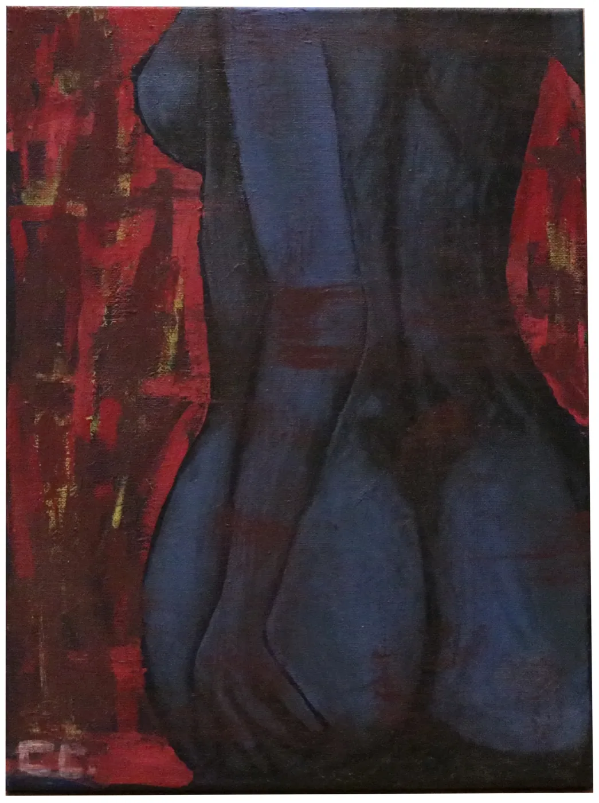
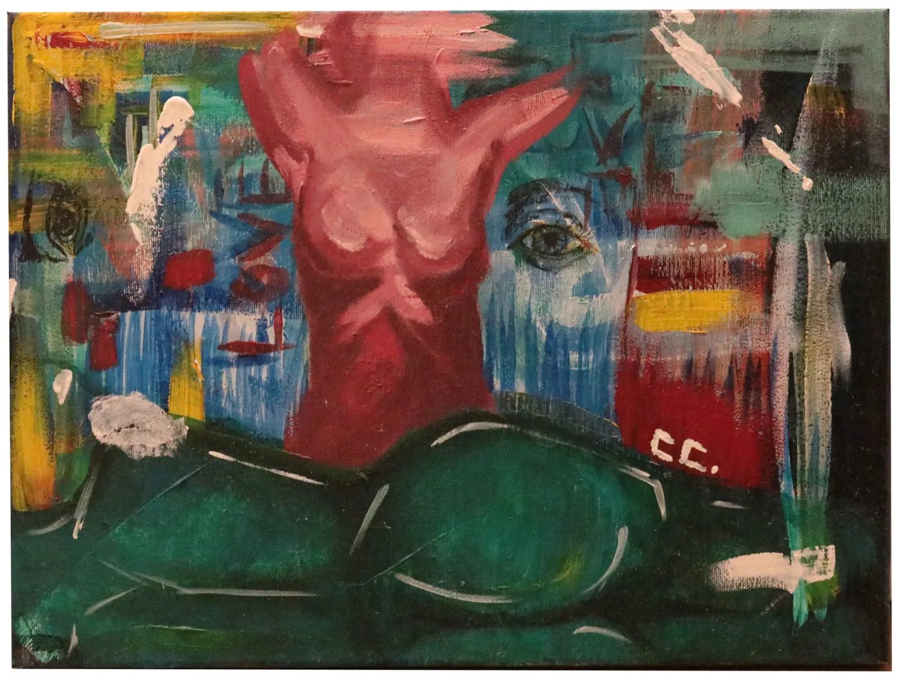

Colección
Cecilia Pelayo
Dibujo yo. Y lo convierto en producto.
Diseñadora gráfica e ilustradora Madrid
Fuera de serie
Pintura y experimentos personales. Lo que hago cuando nadie me lo encarga, y de donde sale buena parte de mi mano.


Lo que puedo hacer por tu marca
-
Packaging
Envases, etiquetas y cajas pensados para el lineal, vestidos con ilustración propia.
Nº 01 · 03 · 06 -
Diseño editorial
Libros, catálogos y colecciones, de la cubierta a la última página y sus piezas promocionales.
Nº 02 · 05 -
Ilustración
Dibujo a mano en Procreate, preparado para imprimirse sobre producto real.
Nº 01 · 03 -
Identidad y branding
Marcas con carácter: logotipo, sistema gráfico y sus aplicaciones.
Nº 04 -
3D y dirección de arte
Renders de producto en Cinema 4D para enseñar un envase antes de fabricarlo.
Nº 06
Trabajo con Illustrator · InDesign · Photoshop · Procreate · Figma · Cinema 4D · After Effects · Premiere
Contacto Madrid
¿Hablamos?
Cuéntame qué quieres sacar al mundo. Respondo en 24–48 horas.
© 2026 Cecilia PelayoColección completa: 6 sobres · 2 fuera de serie